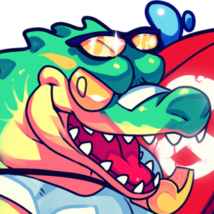
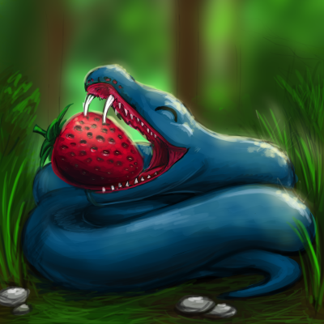
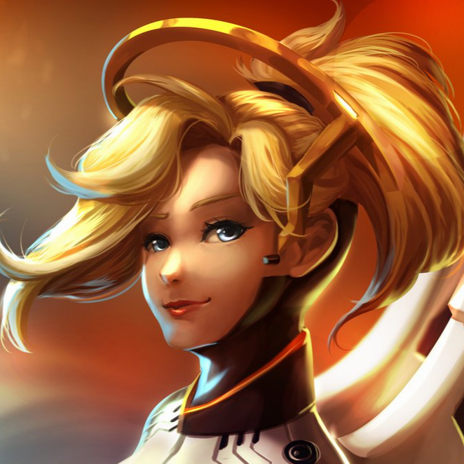
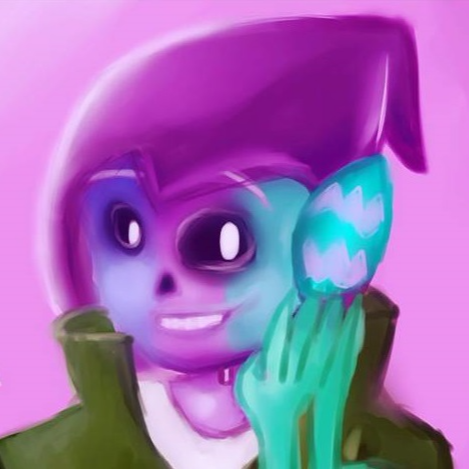
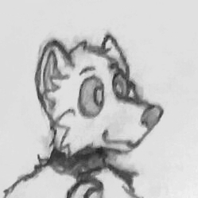
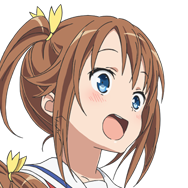

Owners
Dougley

I semi-tested it okay?
Nationality: Dutch
Position: Main developer, Owner
Dougley is the main developer of WildBeast and leads TheSharks. He is the shot caller in the team and takes care of server things. He's an experienced developer and a decently big name in the Discord development community.
Mirrow

Heck.
Nationality: Dutch
Position: Co-owner, secondary developer
Mirrow is the second owner of TheSharks and figures around the server doing a bit of this and that. Second WildBeast version 1.0.0 developer along with Dougley and Perpetucake. Top snek.
SuperStaff
Zaza
I cucked myself.
Nationality: Italian
Position: Developer, SuperStaff, database engineer
Zaza is head of development. He is a very active code contributor and regularly develops new features to WildBeast. Upholds LemonMC in our server cluster for WildBot. Hardened veteran of TheSharks.
LWTech

I was just digging in Doug's dirty dumpster.
Nationality: Finnish
Position: SuperStaff, translations maintainer, head documentation writer
LW is the language wizard of TheSharks. He maintains the translations for WB. Perhaps best known for writing and maintaining our documentation. In addition to this he does web development with Dougley. Jack of all trades.
Admins
Nightex

Your shards make me kms.
Nationality: German
Position: Administrator, Staff Patron, Translator
Nightex is the one that helps keep the server up financially by being a Patron. He also makes code contributions and has made the German translation for WildBeast. Also frequent user of forsenE.
Nenkai

We ain't using magic to fix things... Can you like... Wait?
Nationality: French
Position: Administrator, Translator, Contributor
Nenkai, formerly known as TheKill69, is the most active contributor to WildBeast GitHub repository rivaled only by Dougley. He provides mainly bugfixes and runs his own WildBeast fork, Sinister. Also the author of the French translation for WB.
Piero

I asked WildBot what it's favorite pizza topping was, and it said it's birthday was Game of Thrones.
Nationality: American
Position: Administrator
Piero is an administrator. In addition to support tasks he is a code contributor and has introduced a few commands to WildBeast. Figures around on the GitHub repo and does some issue checking as well.
Jamiea

Give me your talent dammit!
Nationality: British
Position: Administrator
Jamiea is the newest addition to the team of TheSharks. He mostly figures about on the server and answers user questions. Has yet to really make a name for himself. Although the case where he said he would eat his neighbour was certainly interesting...
Moderators
Pepe

I did 'json' for success.
Nationality: Dutch
Position: Moderator, Contributor
Pepe is a moderator and code contributor to WildBeast. And possibly the rarest Pepe in the world, in his own words.
Yoshii
I'm depresrsed now.
Nationality: American
Position: Moderator
Yoshii is a community veteran and now a moderator in the server. Working on support cases for the most part in addition to developing his own things in the form of YoshiiBot.
jagrosh

How can WildBot be real if sharks aren't real?
Nationality: American
Position: Moderator
Jagrosh is a moderator that figures around in the server every now and then, mostly exercising developmental collaboration. Best known for creating the Discord bot Spectra and its subsidiary + spinoff projects.
Dean

EH-EH-EH-EH-EH-EH-EH-EH-EH-EH-EH-EH-EH-EH-EH
Nationality: Australian
Position: Moderator
Dean, better known as deansheather, is an administrator for WildBeast. He is perhaps best known for running Discord.FM. His main contribution to the project is likely giving his voice to the Deanpower command.
link2110

<insert a bunch of random emojis here>
Nationality: American
Position: Moderator
Link is a moderator for WildBeast and is perhaps more known for running /r/LoveLive and moderating Discord.FM. If you ever catch a glimpse of him, you got lucky.
Honorary members
Members that have made significant contributions to the project.
Buffalo
Don't worry guys I'm not a full blown idiot.
Nationality: British
Position: Artwork creator
Buffalo created the custom artwork for WildBeast and other projects within our organization. His artwork can be found around this website and other TheSharks channels. The official icon of TheSharks, the purple shark, is his creation.
All quotes taken from #starboard or other channels in WildBot's Territory.
Some of the quotes used have been slightly modified to work in writing. The message has remained unchanged.